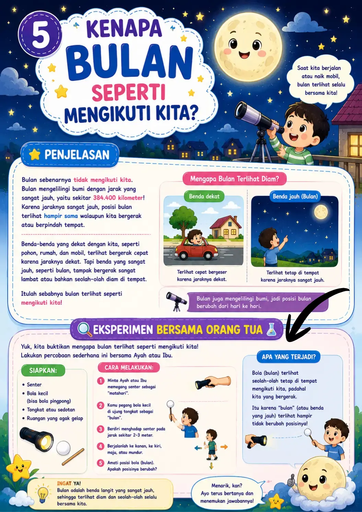
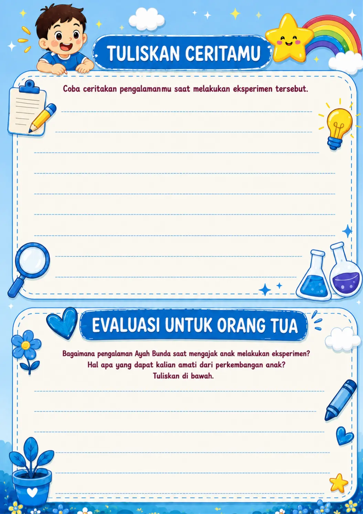

Untuk Orang Tua dan Anak
Aktivitas dibuat agar anak tidak belajar sendirian, tetapi ditemani keluarga dengan aman dan menyenangkan.
4 Seri Buku Eksperimen Anak
FAKTA SAINS membantu orang tua mendampingi anak belajar dengan cara mengamati, mencoba, membandingkan, dan menceritakan kembali hasil eksperimen mereka.


Cocok untuk anak yang suka bertanya: “Kenapa bisa begitu?”
Aktivitas dibuat agar anak tidak belajar sendirian, tetapi ditemani keluarga dengan aman dan menyenangkan.
Anak diajak menulis pengalaman setelah mencoba eksperimen, bukan hanya membaca jawaban.
Banyak aktivitas dilengkapi arahan agar percobaan dilakukan dengan pendampingan orang dewasa.
📚 Koleksi Buku
Setiap seri membawa tema eksperimen berbeda: alam, tubuh manusia, benda sehari-hari, reaksi sederhana, dan pengamatan lingkungan.
💡 Kenapa Cocok untuk Anak?
Anak sering bertanya tentang langit, hujan, tubuh, makanan, magnet, sabun, air, cahaya, bunyi, dan benda-benda di sekitar rumah. Buku ini mengubah pertanyaan sederhana menjadi pengalaman belajar yang hangat.
Penjelasan dibuat sederhana agar mudah dipahami anak.
Bahan banyak ditemukan di rumah seperti air, gelas, kertas, es, garam, atau balon.
Anak belajar mengamati lalu menyampaikan kembali hasil temuannya.
Bertanya → Mencoba → Mengamati → Menceritakan

Buku ini membantu orang tua mendampingi anak saat membaca, bertanya, mencoba eksperimen, dan menjaga keamanan selama belajar.

Anak diajak mencoba percobaan sederhana memakai bahan yang dekat dengan kehidupan sehari-hari seperti air, sabun, magnet, es, kertas, balon, telur, dan bahan dapur.

Setelah bereksperimen, anak bisa menulis pengalaman belajarnya. Orang tua juga bisa mencatat perkembangan, respons, dan hal menarik yang terlihat selama aktivitas.
Geser atau klik seri untuk melihat contoh pertanyaan.
🚀 Cara Pakai
Pola pemakaian dibuat sederhana agar orang tua tidak perlu bingung saat menemani anak.
Anak diajak menebak jawaban sebelum membaca penjelasan.
Pilih eksperimen yang bahannya tersedia dan aman dilakukan.
Orang tua mendampingi anak saat mencoba dan mengamati.
Anak menulis atau menceritakan kembali apa yang ia lihat.
💬 Kata Mereka
Bagian testimoni bisa diisi dengan ulasan pembeli asli ketika landing page sudah digunakan.
“Anak jadi sering bertanya dan semangat mencoba eksperimen sederhana di rumah.”
“Visualnya ceria, topiknya dekat dengan kehidupan sehari-hari, dan cocok untuk belajar bersama keluarga.”
“Bukan cuma membaca, anak juga diajak mengamati, mencoba, dan menulis cerita.”
❓ Pertanyaan Umum
Jawaban singkat untuk calon pembeli sebelum menghubungi CS.
Cocok untuk anak usia belajar awal hingga sekolah dasar dengan pendampingan orang tua, terutama anak yang suka bertanya dan mencoba hal baru.
Tidak. Eksperimen dibuat sederhana dengan bahan yang mudah ditemukan di rumah. Namun, tetap disarankan ada pendampingan orang dewasa.
Bisa disesuaikan dengan stok dan paket penjualan. Tombol beli akan mengarah ke WhatsApp CS untuk konfirmasi paket.
Klik tombol WhatsApp, lalu calon pembeli akan langsung masuk ke chat CS dengan pesan otomatis yang sudah disiapkan.
🛒 Pesan Sekarang
Klik tombol WhatsApp untuk bertanya stok, harga, paket seri, ongkir, dan cara pemesanan ke CS FAKTA SAINS.